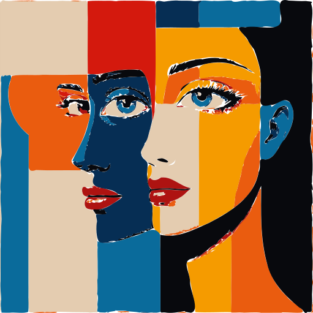
Подбор материалов для рукоделия. Расчёт цветовых гармоний и поиск цвета с камеры.
ColorInsomnia — инструмент цвета для дизайнеров и мастеров рукоделия: рассчитывает гармоничные сочетания, распознаёт цвет с камеры, находит названия оттенков и подбирает бренды и идентификаторы материалов для закупки.
Приложение подходит для дизайнеров украшений, fashion‑индустрии и всех, кто интересуется психологией и эстетикой света и цвета. Интерфейс интуитивен и не требует сложных настроек.
Приложение можно установить напрямую или через RuStore.
Скачать и установить ColorInsomnia с RuStore
Также приложение можно установить напрямую, без использования RuStore.
Download APK (ColorInsomnia v16.0)
Перед установкой рекомендуется сверить SHA‑256‑хэш:
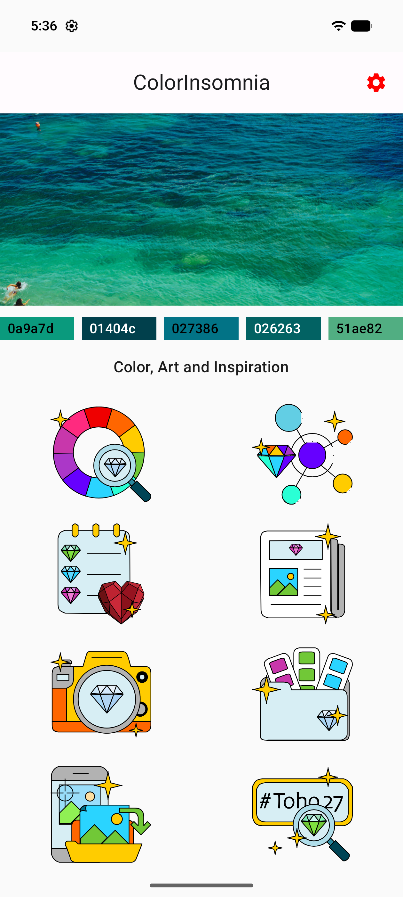
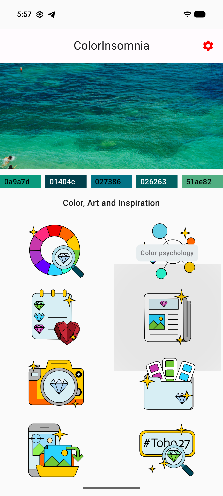
Главный экран обеспечивает навигацию по ключевым функциям приложения.
В правом верхнем углу расположен переход в настройки приложения.
В центральной части для вдохновения ежедневно отображается «картинка дня» и подобранная по её цветовой гамме палитра из пяти цветов. При нажатии на картинку дня открывается экран материалов, подобранных к цветам этой палитры.
Восемь иконок внизу обеспечивают переход на экраны для:
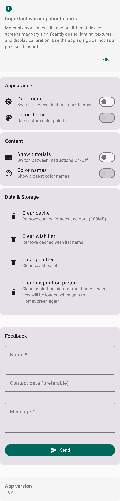
На этом экране можно включить или отключить подсказки, настроить тему приложения, очистить кэш, отправить вопрос или отзыв разработчикам, а также посмотреть версию приложения.
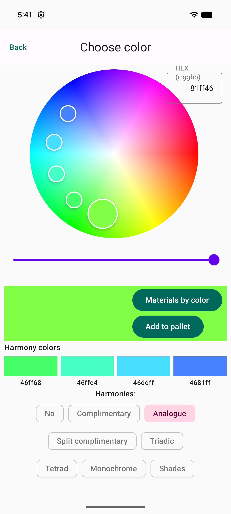
Раздел позволяет подобрать к целевому цвету гармоничное сочетание. Для точности ввода цвета можно использовать HEX‑значение в правом верхнем углу цветового круга.
После подбора сочетания выбранные цвета можно добавить в палитру или перейти к разделу материалов, чтобы просмотреть доступные варианты по заданным цветам.
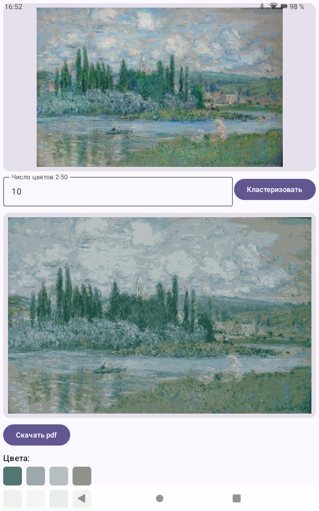
Функция позволяет уменьшать количество цветов на изображении и сохранять результат либо в виде обновлённого изображения, либо в виде схемы с указанием расположения цветов и списка подобранных к ним материалов.
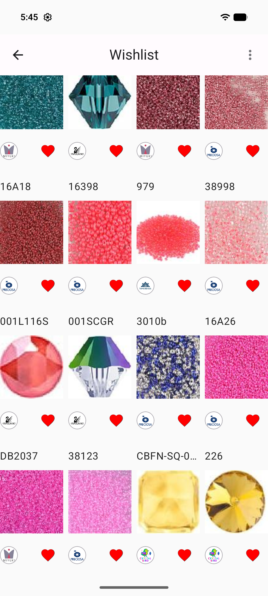
В этом разделе можно хранить списки избранных материалов и быстро к ним возвращаться.
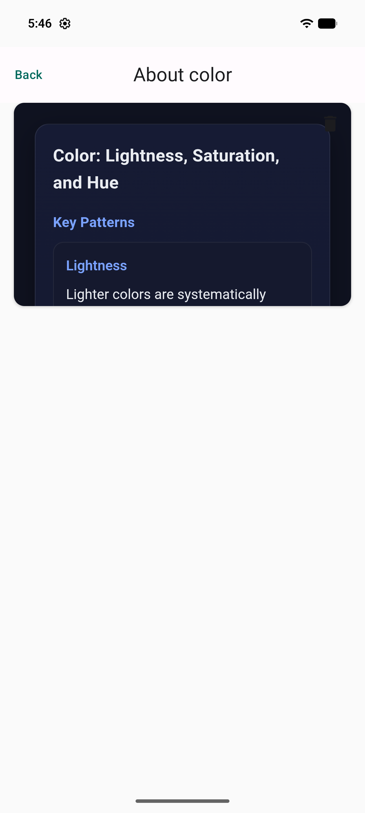
В этом разделе представлены очерки, статьи и новости о цвете и его восприятии.
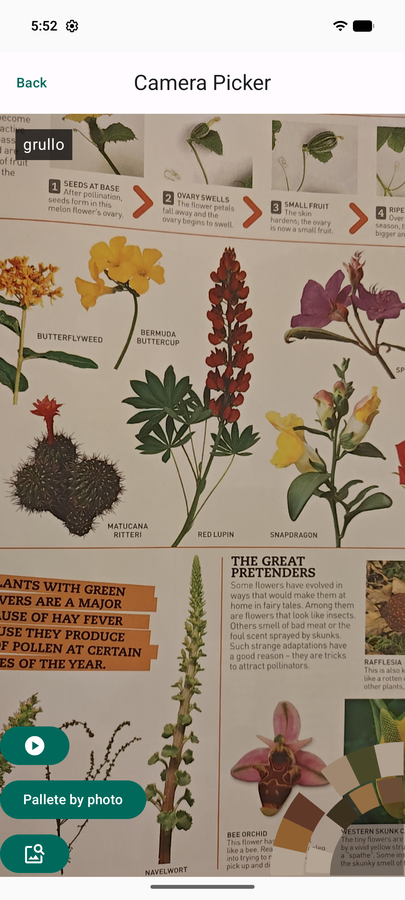
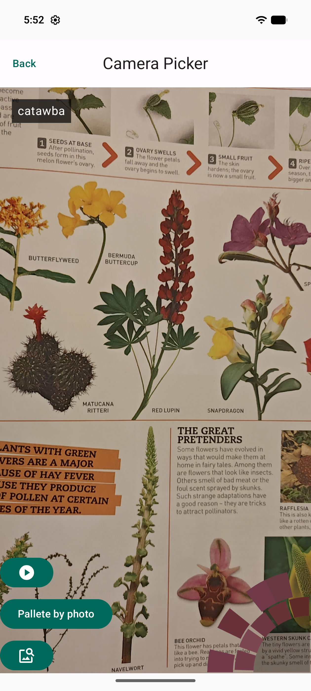
Раздел позволяет оценивать цвет в режиме реального времени и перейти к гармоничным сочетаниям или материалам по выбранному цвету.
Для удобства можно заморозить изображение и нажатием пальца выбрать нужную область. Также поддерживаются картинки, сохранённые на устройстве.
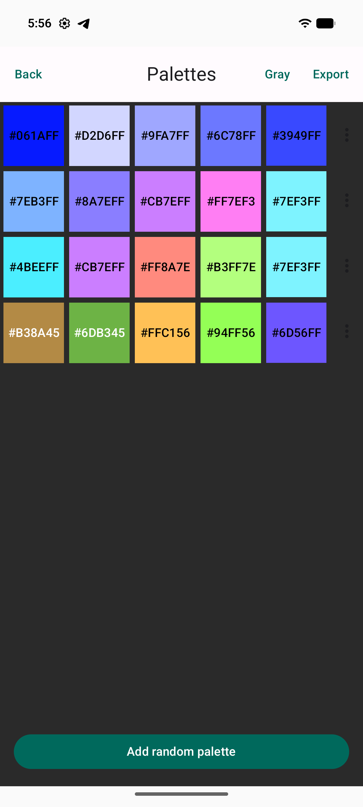
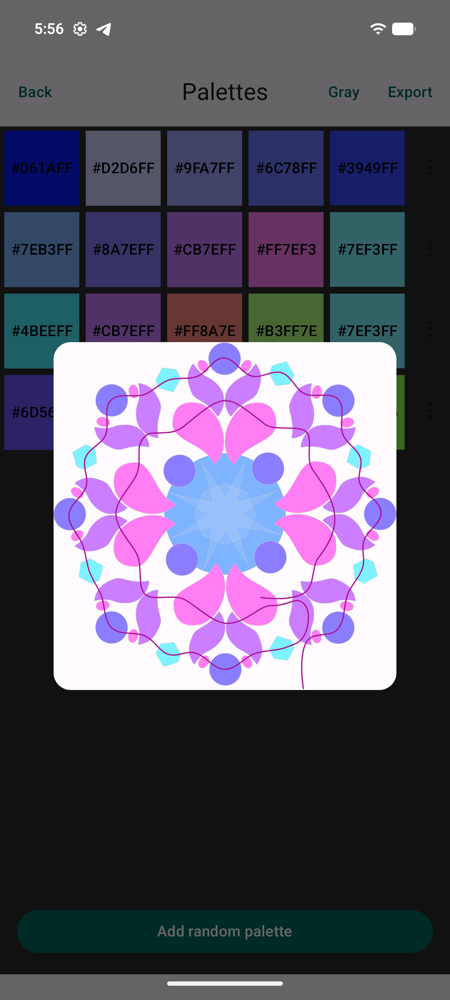
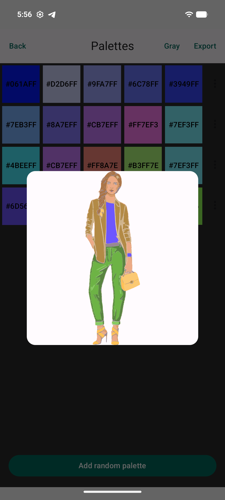
В этом разделе можно хранить до 10 палитр, сохранённых из раздела «Гармонии» или сгенерированных случайным образом.
Палитру можно «примерить» к плетёному элементу или комплекту одежды, чтобы оценить её визуальное восприятие.
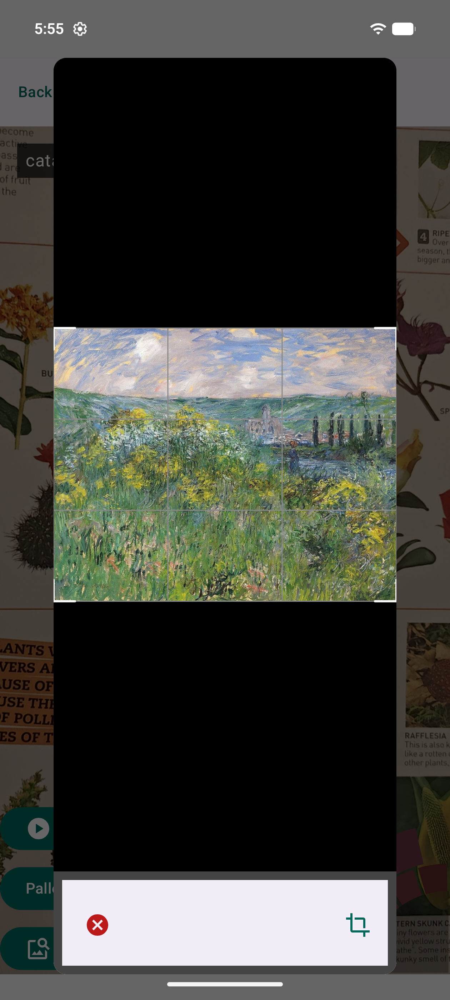
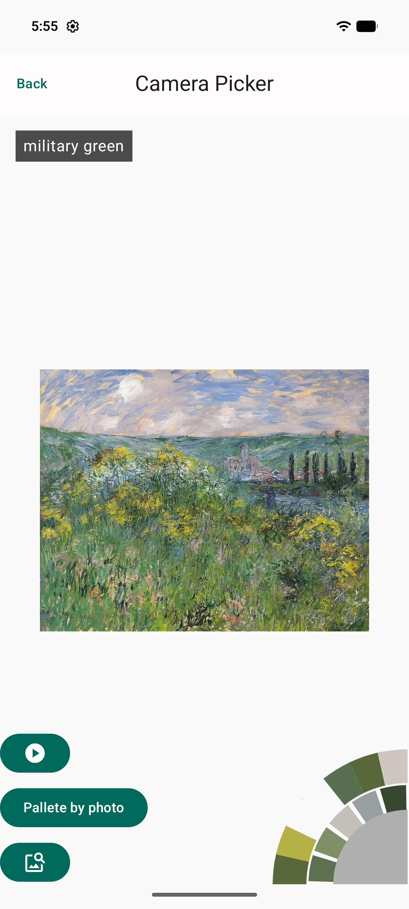
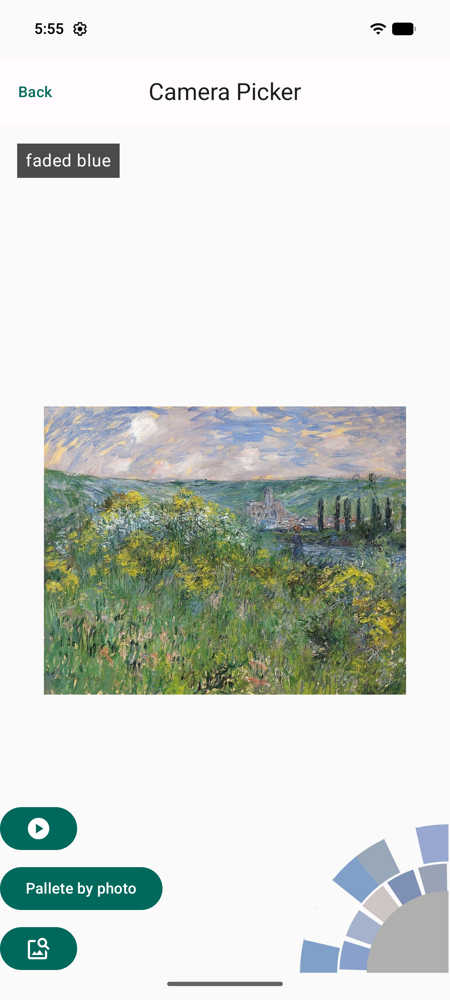
Раздел позволяет открыть изображение, сохранённое на устройстве, и проанализировать цвета со всего изображения или с выбранного фрагмента.
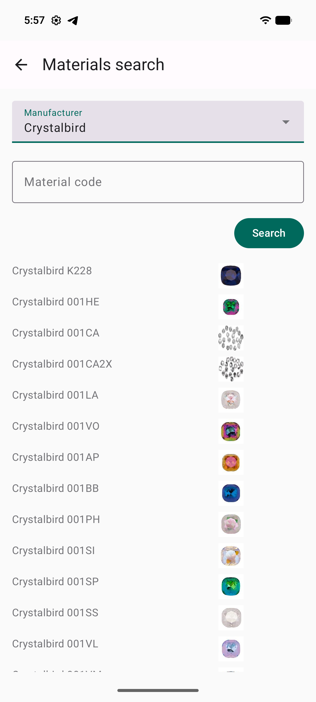
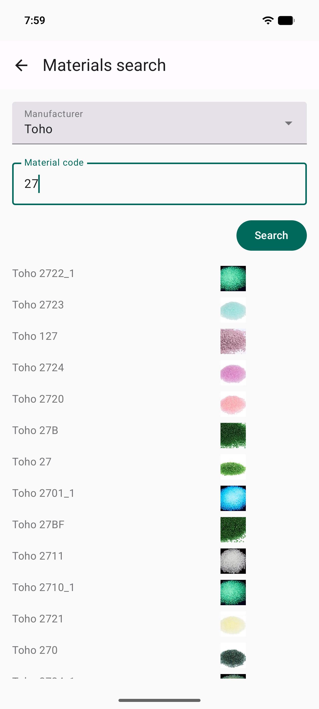
В этом разделе можно, зная идентификатор цвета, найти нужный материал и подобрать гармоничные цвета или аналогичные материалы.